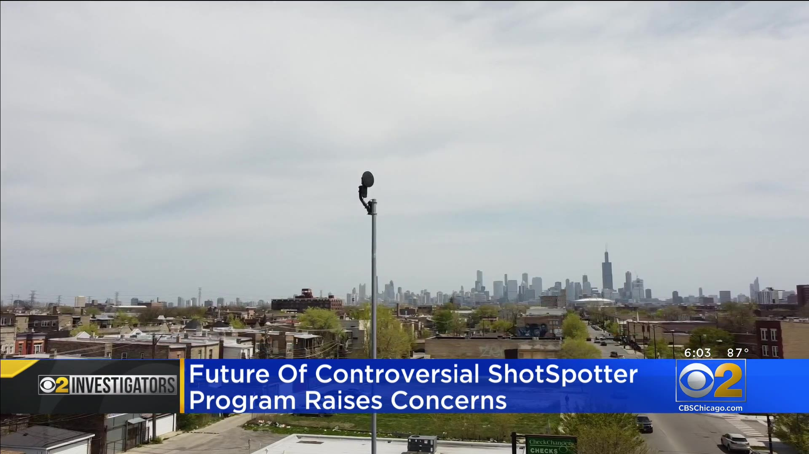

Who We Are
We represent a broad coalition of local and national organizations and communities who are deeply concerned about ShotSpotter’s harmful impacts on the Black, brown, and poor people that the company surveils. We are united to #StopShotSpotter and build community-led responses to address the root causes of gun violence.
Sign our Open Letter
Tell ShotSpotter: Stop selling surveillance
Sign our Open LetterOur Demands
Join us as we demand cities immediately cancel their ShotSpotter contracts and redirect funds to social services which have been proven to address gun violence. City governments considering using ShotSpotter should reject their dubious marketing claims and embrace the science, which is clear that what most effectively addresses gun violence is a public health approach, not spending millions on flashy new law enforcement surveillance tools. It's time for Shotspotter to do the right thing- stop selling products that perpetuate injustices and start listening to communities calling for real solutions to gun violence.
News

Opinion: Adopting ‘Shotspotter’ gunfire detection system would be neither effective nor equitable

ShotSpotter Generates Thousands Of Alerts In Dayton, But Officers Find Few Crimes

Inside the controversial US gunshot-detection firm

St. Louis technology detects lots of gunfire, but calls often lead to a dead end

ShotSpotter held in contempt of court

Lawsuit Alleges Chicago Police Made False Arrests Based on Faulty ShotSpotter Alerts

Controversial ShotSpotter technology to be used by police along 3 square miles in east, south Durham

Report: ShotSpotter wastes officers time, provides little help in court, targets overpoliced communities

NYC, Chicago Waste Millions on Gunshot Detection Technology, Report Says

In Chicago, Controversy Mounts Over the Use of Gunshot Detection Sensors

More Cities Are Moving to Drop Automated Gunshot-Detection Tech

CPD Extends ShotSpotter Contract With No Public Notice

How AI-powered tech landed man in jail with scant evidence

How ShotSpotter fights criticism and leverages federal cash to win police contracts

Opinion: San Diegans deserve a new surveillance ordinance. Until then, we’re all in the dark.
:quality(70)/cloudfront-us-east-1.images.arcpublishing.com/tronc/DRGXSJDM5GSTWIW6KO22RL5M7Y.jpg)
Cancel the NYPD’s ShotSpotter contract

The Shots Heard Round the City

Oakland, CA to reconsider 'totally unproven' ShotSpotter tech

San Diego City Council Review of Renewal of SpotShotter System Pulled From Agenda

Chicago watchdog harshly criticizes ShotSpotter system

Nashville police want $800K for a gunshot alert system. But it’s unclear if the technology is effective.

Cleveland police say ShotSpotter is helping to reduce gun violence, but critics question its effectiveness

Too much Big Brother? Mobile gunshot detection initiative stirs government surveillance concerns

Viewpoints: Buffalo should not spend federal dollars on ShotSpotter

City of Buffalo 2023 budget approved, ShotSpotter police technology removed